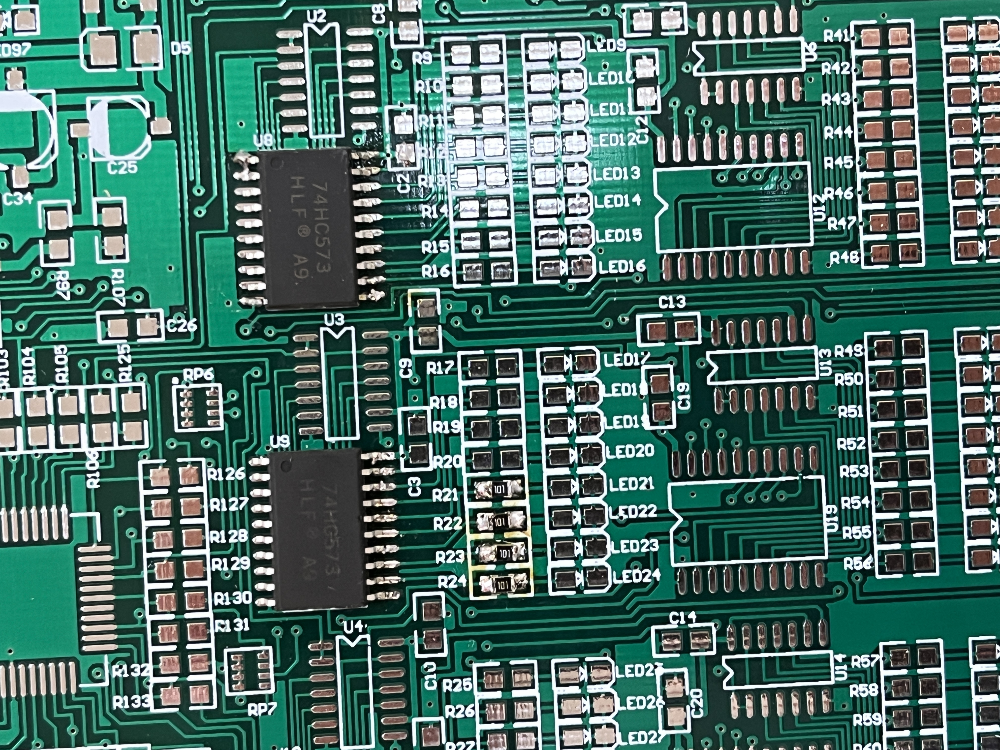
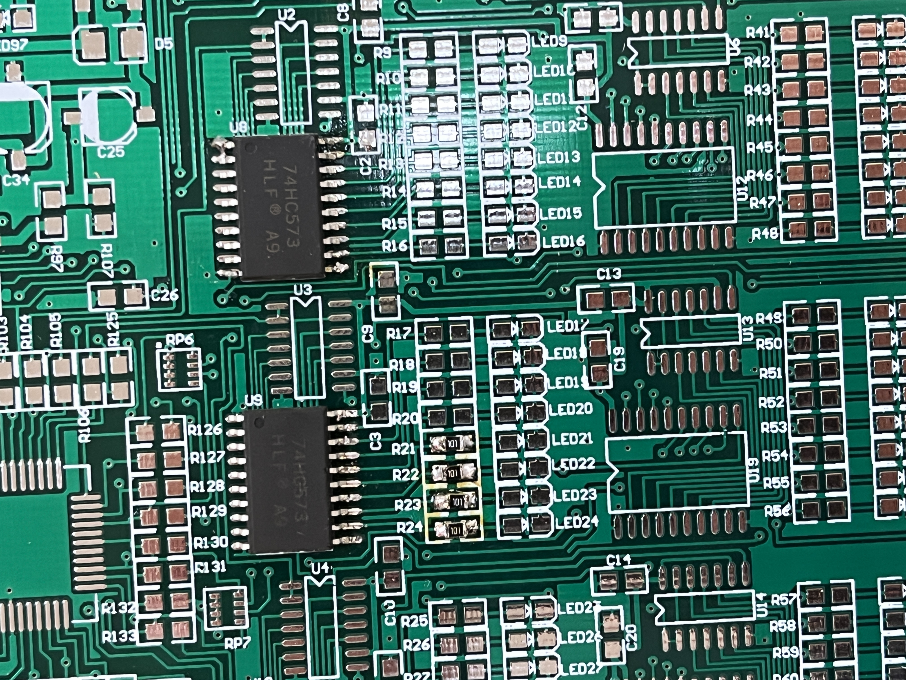

Python CMU Drawings and Shape Exercises
This was an assignment that I completed for my genius hour topic. Throughout this course, I read the informative material and then programmed a picture to fit the sample model’s design. These shapes include stars, circles, rectangles, and squares, but it also includes text, font, coloring, gradients, dashes, and opacity. As with most things, writing the code was not difficult but understanding where to put the code was somewhat challenging. Especially for this kind of assignment, knowing how to properly layer the shapes, which meant knowing which code to put on top or bottom, was difficult.
Snap programming U1L1 Alonzo Game
The project shown above is an image of a game programmed in SNAP by BJC. When the Sprite is clicked by the player, it begins to randomly blink around the canvas. After that, everytime the Sprite is clicked, its opacity decreases, it rotates 180 degrees, and blinks away. The player must attempt to click on the Sprite fast enough, so that he can control when it blinks and try to make it disappear completely. While programming this game, it was difficult to make the opacity decrease with a click.
Skratch Lab Coordinate Shape Drawer
This program, although lacking a drawing tool, is meant to draw shapes that correspond to the X and Y coordinates imputed. If the first coordinates imputed are both positive, a square is drawn by using that coordinates as its upper-right corner. The pattern continues for all coordinates given except (0,0). When the origin is imputed, the program asks the user if he wants to draw a square the left or right, positive or negative on the x-axis. Then the program asks if the user wants to draw in the upper or lower quadrants, positive or negative on the y axis. Finally, the program asks what length the user would like the square to be. The program then traces a square with the imputed length into the chosen quadrant. This project uses the IF command extensively, and also transforms many positives and negatives. It was challenging to figure out what transformations had to occur to obtain the desired outcome.
Draw With Dots
This is an app that allows the user to plot points that then get turned into shapes depending on the points' position. This app was created by Conner and Daniel during APCS.
CNC Lesson Plan and Walkthrough
During this project, my team and I created an eight day CNC presentation that aims to provide classmates and individulas with basic CNC knowedge. We accessed the Maker Media online CNC PDF as well as Carbide Create and Motion software to help us access specific measurements. The presentation includes 3-4 days of organized preliminary information like how to zero a CNC machine and walks through how to create a diliverable (an initals nametag) using Carbide Create/Motion and the Nomad 883 CNC milling machine. The slideshow also provides opprotunities for more advanced desgins using other CAD software like Solid Works or Fusion 360. An image of some deliverables are shown below.


Fusion Class Deliverables
This Semester I was lucky enough to take a Fusion 360 course at the Solano College. I've been really gald with the lesson material and feel like I've learned many things in a short time period. Above are some of my projects that I created during this course; the pencil holder uses parmaetic modeling in the Fusion Model workspace, and the other two drawings use the sculpt and form workspace. The major difficulty in creating these drawings appears when you have to dimension sketches to fit your requirements (i.e. pencil diameters), and during the sculpting lessons, I found mitigating erros to be the most difficult (i.e. overlapping forms). I hope to continue Fusion, and I am very excited to learn the mesh and animation workspaces.

 

Experience: Completing the Soldering Module
These images show some deliverables that I made after completeting classmates' soldering training module. The module coverd the basics of soldering, and it also showed how to complete more advanced surface mounting techiques. The module included links to websites that were helpful as it demonstrated diffenent soldering options and ways of fixing soldering-gone-wrong. I've especially enjoyed learning how to course correct and make soldering projects that actually do what they are suppose to do; two of the images above picture a radio that actually picked up signal.
Arduino Tiny ML Training
During this project, my team and I created an eight day Arduino ML Harvard edX presentation that aims to provide classmates and individuals with basic Machine Learning knowledge. We accessed Harvard edX's free online course material including fundamentals, Applications and Deployment as well as the TinyML Arduino Hardware Kits and Arduino IDE. The presentation includes two days of organized preliminary information like instructions to assemble software and hardware along with a basic introduction to some ML Algorithms such as Linear Regression models and gradient descent optimization. This course would not be long enough to explain these methods in depth, so it focuses on getting students to just deploy the ML hardware without having to go through the lengthy Harvard edX course material. The tutorial also walks students through creating different deliverables using Arduino's image, sound, and motion sensors. With the preset data, students are able to easily observe the process of ML and use the pre-set models to deploy custom options; Below are expamples of three deliverables that students must create.